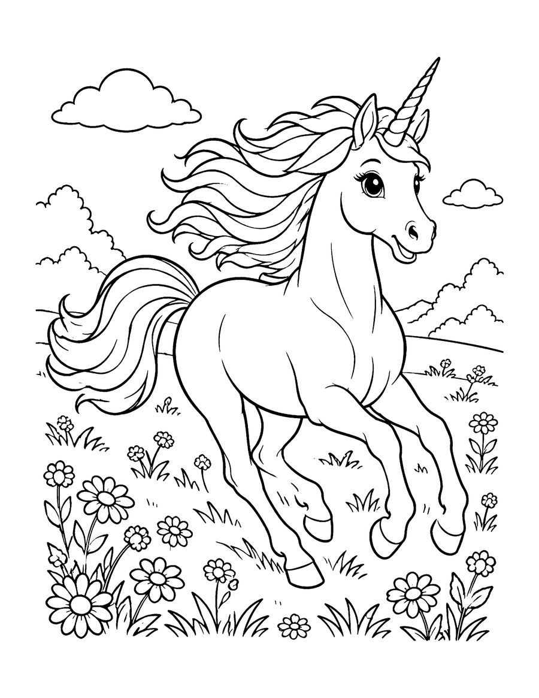
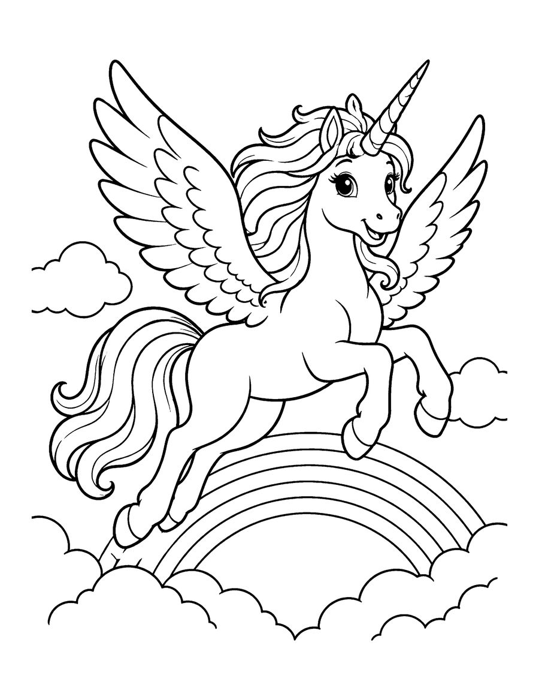
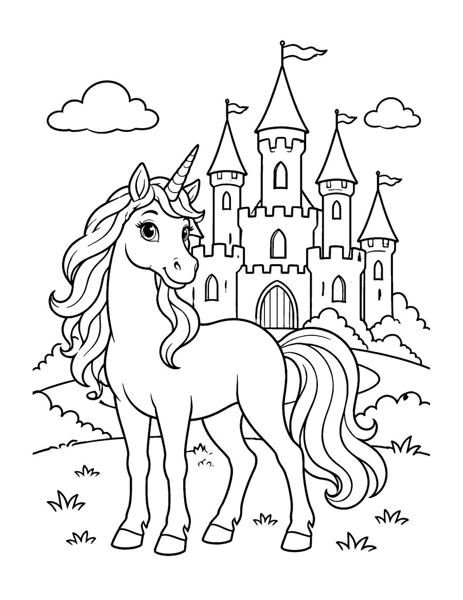

Here are three free unicorn coloring pages to print at home: a unicorn galloping through wildflowers, a winged unicorn flying above the clouds and a rainbow, and a unicorn standing in front of a fairytale castle. They are taken from Unicorn Dreams, a coloring book for kids ages 6 to 12 with 40 magical scenes.
Unicorn pages are popular for birthday parties, rainy days and creative storytelling. After coloring, ask your child to invent a name for the unicorn and write a short story about where it lives. Fun fact: the unicorn is the national animal of Scotland. The designs have clear outlines with medium-sized areas and enough detail to make shading, patterns and rainbow manes fun for older kids. Print on US Letter paper at 100% scale. Glitter gel pens, metallic markers and colored pencils all look great. The full book has 40 unicorn scenes, from meadows and waterfalls to starry skies.
Your 3 free coloring pages

Winged Unicorn and Rainbow
Download free page (PDF)
Unicorn at the Castle
Download free page (PDF)Printing tips
- Print at 100% scale on US Letter (8.5 x 11 in) paper. For A4, choose “Fit to page”.
- Use heavier paper (65 lb / 120 gsm or more) if you color with markers, so ink does not bleed through.
- Download the PDF first, then print from your PDF viewer for the sharpest lines.
Get all 40 pages
These 3 pages are a taste of Unicorn Dreams (Kids 6-12). The full coloring book has 40 pages, ready to print or color in a book.
More free coloring pages

Free Cat Coloring Pages for Kids
Kids 6-12

Free Koala Coloring Pages for Kids
Kids 6-12

Free Dolphin Coloring Pages for Kids
Kids 6-12

Free Honey Badger Coloring Pages for Kids
Kids 6-12